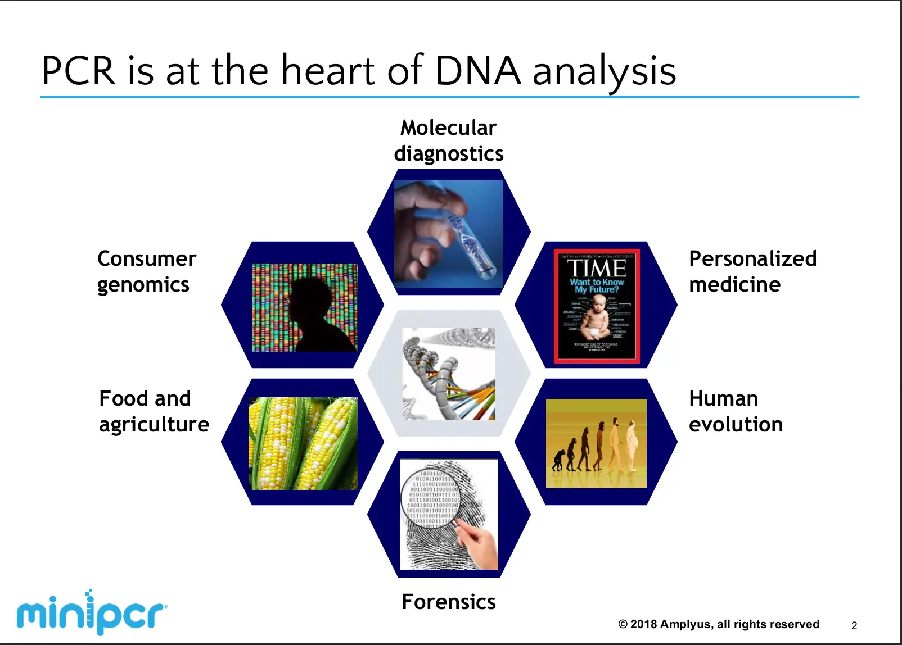

This project as said in the title is about dna. Specifically the length of dna. In our project we compared the dna for class of '29 to see who we were closely related to. We started with learning about thing such as;
This allowed us to have some understanding of what we were getting ourselves into. After that we made flashcards to study our part of the project we were supposed to master. In this case my role in my team was to mast PCR Amplification.

The first step of this project was to get a DNA sample from the cheek cells inside our mouths. Those samples were then put into a buffer. After that we incubated them. While they were incubating we started making our pcr set up
This was done by mixing these things listed below in a tube